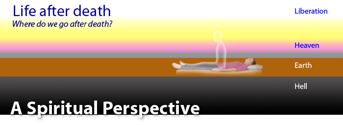
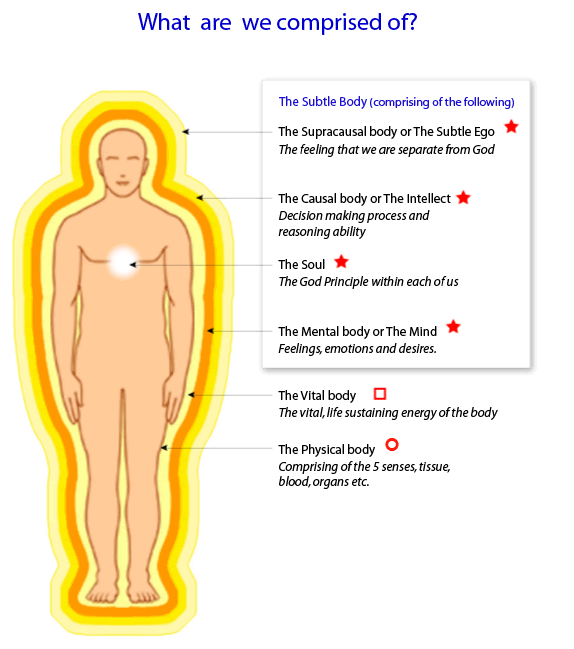
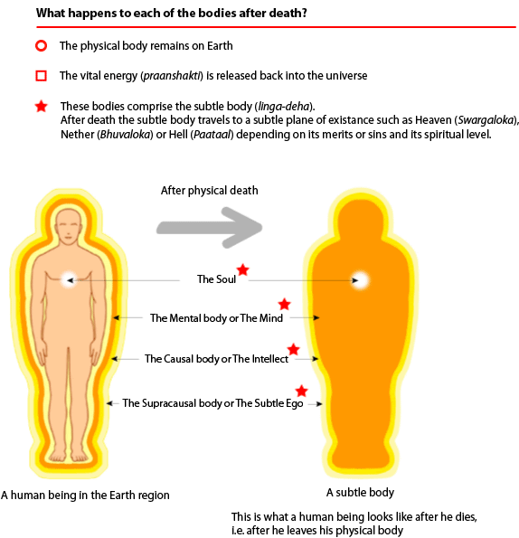
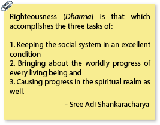
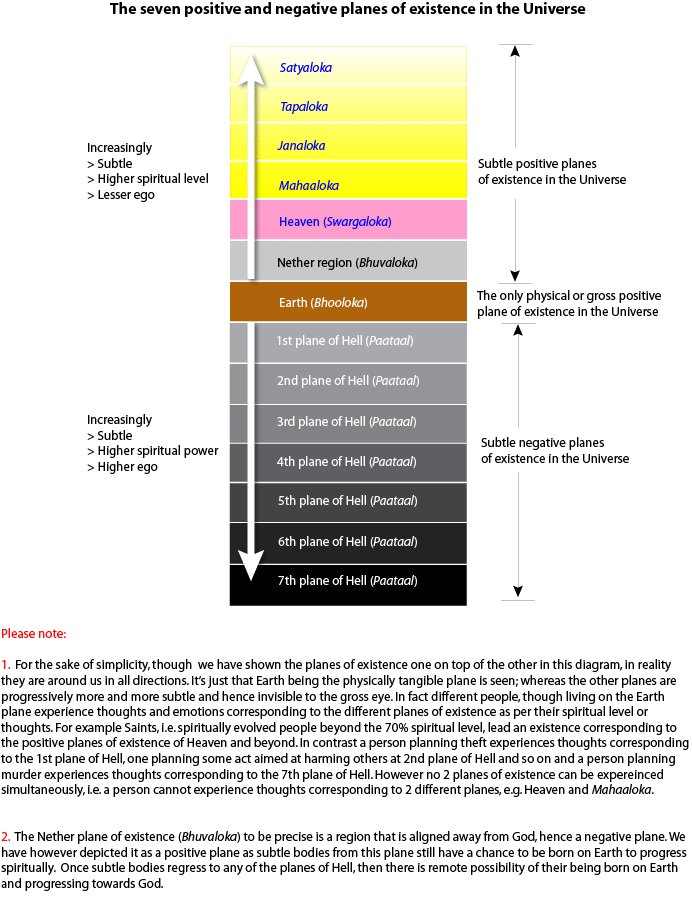
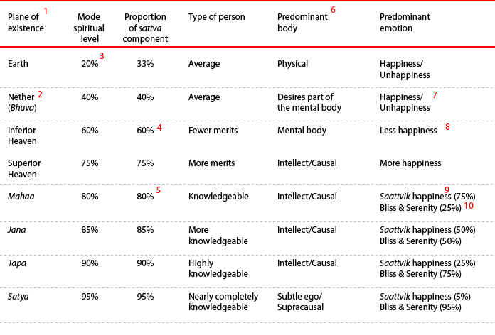
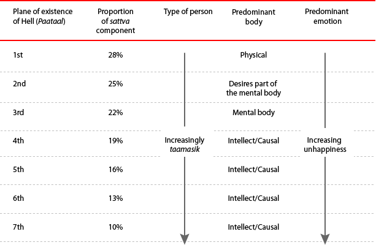
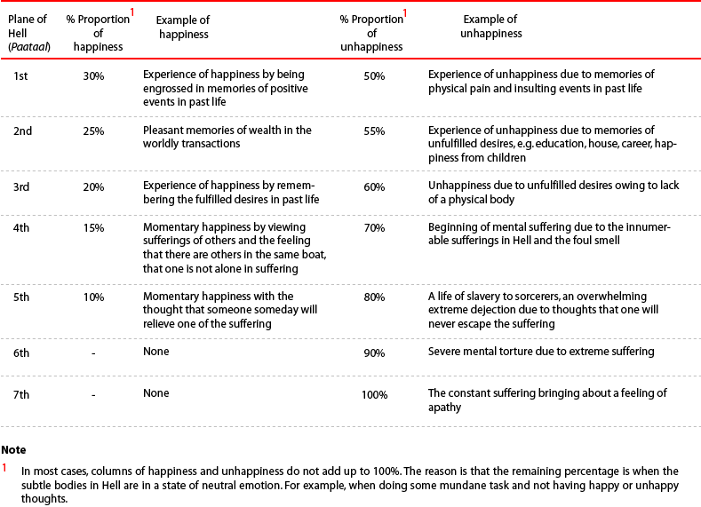
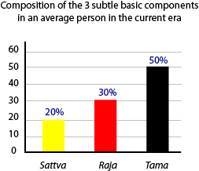
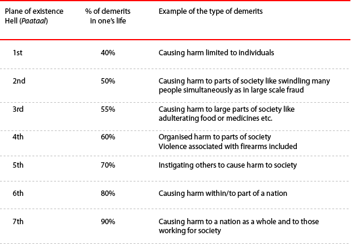

Life after Death

Abstract
The innumerable recorded and researched cases of past life experiences clearly point to life after death. In all the recorded cases of reincarnations, it was found that there was a variable time lag between the death of the person and his next reincarnation on Earth. So, where do we go after death till our reincarnation on Earth? Is it a single plane of existence or are there a variety of planes of existence? If so, what are the factors that decide where we go after death? In this article, we present the answers to these and other questions about this topic. These answers are obtained through spiritual research done by seekers of the Spiritual Science Research Foundation (SSRF) with highly developed sixth sense(ESP).
Note: In order to understand this article better, it is recommended that you read the article on the three subtle basic components of sattva, raja andtama.
2. The various planes of existence in the Universe
3. Characteristics of the seven positive planes of existence in the Universe
3.1 Positive planes of existence and reincarnation on Earth
3.2 The importance of the Earth plane of existence
5. Movement between subtle planes of existence in the Universe
6. What decides where we go after death?
6.1 Importance of the mental state at the time of death
8. Why is there a time lag between two reincarnations?
Spiritual research has shown that man is comprised of the following four basic bodies:
Physical
Mental
Causal or intellectual
Supracausal or subtle ego
The picture below is a diagrammatic representation of what a human being is comprised of.


When a person dies the physical body ceases to exist. However, the rest of his existence or consciousness continues. The existence of the person minus the physical body is known as the subtle body (linga deha) and it comprises of the mental, causal (intellect) and supracausal (subtle ego) bodies. This subtle body then goes to one of the 13 subtle planes of existence other than the Earth plane.
There are 14 main planes of existence in the Universe. Seven of them are positive planes of existence and seven are negative planes of existence. The seven negative planes of existence are commonly known as Hell (Paataal). There are numerous sub-planes within these main planes of existence.

Seven positive planes of existence: The planes of existence occupied mostly by living persons and subtle bodies doing righteous deeds and engaged in spiritual practice according to the positive path of spiritual practice are known as the seven positive planes of existence orsaptaloka. By positive path, we mean the orientation of spiritual practice is towards God-realisation, which is the ultimate in spiritual growth.The Earth plane is the only physical plane of existence in the Universe and is also the first plane of existence in the hierarchy of the positive planes of existence in the Universe.
Seven Negative planes of existence: These are planes of existence occupied mostly by subtle bodies that have done unrighteous deeds and are engaged in spiritual practice according to the negative path. By negative path, we mean the orientation of spiritual practice is towards attaining spiritual power, e.g. supernatural powers. This spiritual power is primarily used to enhance one’s control over others or for negative purposes. Thus all subtle bodies that go to any one of the planes of existence of Hell, by virtue of their evil intentions become ghosts.
Refer to the article on, ‘What is a ghost’?
Sub planes of existence of Hell (Narak): Every plane of existence of Hell (Paataal) has a sub-plane known as Narak. For example, the first plane of existence of Hell will have within it a sub-plane that is known as the first Narak. Narak is reserved for the worst ghosts (demons, devils, negative energies, etc.) in Hell. The ghosts (demons, devils, negative energies, etc.) occupying the first Narak face more severe punishment and for a longer duration than those occupying the first plane of existence of Hell.
The diagram below shows the 14 planes of existence in the Universe.

An explanation behind the colour scheme used
Earth is depicted reddish as it represents action (i.e. subtle basic raja component), as it is the only plane where we have the physical body to do something.
Heaven has been depicted in pink, which represents an abundance of happiness.
Yellow represents spiritual knowledge and an increase in the subtle basic sattva component. It finally becomes almost white at the highest stage, which represents the close proximity to the unmanifest God principle.
The regions of Hell are represented by darker shades to black, as there is an increase in the subtle basic tama component.

Footnotes (based on the numbers in red in the above table):
Each positive and negative plane of existence beyond the Earth (physical) plane of existence becomes more and more subtle. By subtle, we mean, that which is beyond the comprehension of the five senses, mind and intellect. Satyaloka is the subtlest, i.e. the most difficult to perceive or comprehend unless the highest sixth sense (ESP) level is attained.
Due to lack of spiritual practice, most people in the current era go to either the Nether world or one of the planes of existence of Hell. We generally go to the Nether world after death when the proportion of demerits (incurred due to wrong doings on Earth) is approximately 30%. Demerits typically include malice towards others and a lot of desires. The likelihood of being attacked in the Nether world by higher-level ghosts from the lower plane of existence of Hell is almost certain.
Earth is the only plane of existence where there is an amalgamation of people with varying spiritual levels. However, after death we go to the precise plane of existence corresponding to our spiritual level.
The minimum spiritual level required to attain Heaven after death is 60%. Please refer to the article, which describes what spiritual level is and the breakdown of the world population in 2006 according to spiritual level. Basically from the Spiritual science perspective, meritorious acts to attain Heaven or the higher positive planes of existence are those acts done with the objective of God-realisation. The following three criteria can be applied.
Acts done without doership, i.e. with the outlook that God Himself is getting it done from me and hence I cannot lay claim to any credit.
Done without expectation of acclaim or appreciation.
Done without expectation of results.
More than the acts per se, it is the attitude or outlook behind the acts that counts more.
To attain a higher plane of existence beyond Heaven one needs to be at a spiritual level higher than 80%. This can only be achieved by consistent spiritual practice according to the six basic laws of spiritual practice along with a major reduction in ego.
By predominant body, we mean the body that is most active, i.e., mental, intellect or the subtle ego. For example, in the Nether plane of existence (Bhuvaloka), the subtle bodies still have a lot of desires and attachments. As a result, quite often they become ghosts trying to fulfil some desire of theirs. This leaves them open to higher-level ghosts from the lower rungs of Hell to take advantage of their cravings to affect people on Earth.
In the Nether plane of existence we experience some happiness. However, the unhappiness is amplified as compared to the unhappiness experienced on Earth.
In Heaven plane of existence, subtle bodies experience an over abundance of happiness. This happiness is much beyond the happiness experienced on Earth in quantity, quality and duration. As we go up the positive planes of existence, there is an increase in the quality of happiness and no unhappiness.
Sattvik happiness means happiness derived from helping others without any expectations or strings attached. When ego is involved in the act, it becomes raajasik.
Serenity is a higher experience than Bliss.
In the planes of existence below Mahaaloka, people need to be reincarnated on the Earth plane to settle their destiny and complete their give-and-take accounts.
If one attains Mahaaloka and Janaloka after death that means they are above the spiritual level of 80%. Here people do not need to be reincarnated as all their remaining destiny can be worked out in these planes itself, but may do so at their own will. Their reincarnation is primarily to act as spiritual guides for humanity.
If one attains Tapaloka or Satyaloka after death, then one does not take birth and continues to do spiritual practice at that plane of existence until one merges completely with God.
The Earth plane of existence is very important. It is the only plane of existence where we can make rapid spiritual growth and settle our give-and-take account in the shortest period of time. The main reason for this is that with the help of the physical body, we can do many things to enhance our spiritual growth and spiritual level and reduce the basic subtle tama component.
Other than Earth, spiritual growth is mostly likely to occur only in the regions beyond Heaven such as Mahaaloka etc. This is because in Heaven, the subtle bodies run the risk of getting caught up in the unending pleasures it offers. In the Nether and Hell planes of existence, the punishment is so severe and also the distress from the other higher-level ghosts is such that it becomes very difficult to rise above the suffering to undertake any spiritual practice of value.

As one goes to lower planes of existence of Hell, as the subtle basic sattva component progressively reduces the environment becomes less conducive to the experience of happiness.
Within the planes of existence of Hell, there are some ghosts who do certain types of spiritual practice to gain spiritual power. The highest in the hierarchy of ghosts are sorcerers from the seventh plane of existence of Hell. They have immense spiritual power almost equivalent to aSaint at the 90% spiritual level. They control all the other types of ghosts with lesser spiritual power.
As one goes deeper into the various planes of existence of Hell, i.e. from 1st to 7th, the extent of happiness experienced by the subtle bodies therein goes on decreasing and the extent of unhappiness goes on multiplying. The minimal experience of happiness is also due to being engrossed in memories of past positive events, pleasant memories of wealth in a past life, etc. The experience of unhappiness is due to memories of physical pain and insulting events, memories of unfulfilled desires, e.g. regarding education, house, career, expectation of happiness from children in past life.
The extent of punishment/pain to be endured in the various planes of existence of Hell (Paataal) and their associated Narak goes on increasing with the subsequent plane of existence of Hell. Also, the period of punishment to be endured in each Narak is in excess compared to the corresponding plane of existence of Hell. If we consider the punishment in first plane of existence of Hell as 100%, then the punishment in the corresponding first Narak region is 50% more, i.e. 150%.
The following table is a description of examples along with the average intensity of happiness and unhappiness we experience in the various planes of existence of Hell.

One is assigned that plane of existence which matches one’s basic nature in terms of sattva, raja and tama. This is also a function of one’s spiritual level. Hence, subtle bodies from lower positive planes of existence cannot go to higher positive planes of existence and those from first or second negative planes of existence cannot go to the deeper planes of existence Hell. This is similar to how people living in the planes find breathing difficult at higher altitudes, but people staying at higher altitudes manage fine.
At the time of death, as the physical body becomes inactive the vital energy used for the functioning of the physical body is liberated into the Universe. This vital energy at the time of death propels the subtle body away from the Earth region. Just as the weight of a projectile decides how far a rocket will propel it, similarly the weight of the subtle body decides which plane of existence it goes to in the subtle planes of existence in life after death.
The ‘weight’ of the subtle body is primarily a function of the amount of the subtle basic tama component in our being.

Sattva: Purity and knowledge
Tama: Ignorance and inertia In an average person in the current era, the basic subtle tamacomponent is as high as 50%.
Please read the article on the 3 subtle basic components
The more we are filled with the raja and tama components the more we display the following characteristics which add to our ‘weight’ and impact which plane of existence we go to in our life after death:
More attachment to worldly things and selfishness
More unfulfilled desires
Feelings of revenge
Higher amount of demerits or wrong-doings
Higher amount of personality defects such as anger, greed, fear, etc.
A higher amount of ego: By ego we mean how much a person identifies himself with his body, mind and intellect as opposed to the soul within
Resulting in lower spiritual level
A permanent reduction in the proportion of the subtle basic tama component and the related characteristics mentioned above come about only with sustained spiritual practice according to the six basic laws of spiritual practice. Psychological improvements with self-help books or trying to be nice are at best superficial and temporary.
The mental state at the point of death, apart from what has been mentioned above, is very important. Our mental state is generally relative to the proportion of the subtle basic components in our being.
If a person is actually doing his spiritual practice such as chanting the Name of God at the time of death then the influence of desires, attachments, ghosts, etc. are minimal possible for that person compared to his state when not chanting. This makes his subtle body lighter. Hence, if he passes away while chanting, he attains better plane of existence among the sub-planes than what he would have attained were he to pass away without chanting.
At the time of death, if a person is chanting the Name of God and is also in a state of surrender to God’s will, then he attains an even better plane of existence in his life after death and his sojourn is undertaken with lightening speed. This is because the person being in a state of surrender on Earth plane of existence itself, has very less chance of increasing his ego in his life after death. Also, the entire responsibility of his well-being in his life after death is undertaken by his evolved spiritual guide (Guru).
The following are the types of deeds in our life on Earth that typically land us in one of the planes of existence of Hell.

The extent, duration and intention behind the wrong-doings are important factors deciding the planes of existence of Hell attained after death rather than just the action itself.
There are two types of death with regards to its timing.
Destined final death: This is the time of death no one can escape.
Possible death: This is where a person can possibly die. Each person may undergo a possible death wherein one comes close to death but is saved due to his or her merits. In cases where a person is going through insurmountable crisis in his life or has severe personality disorders, he may think of taking his own life in a depressed state. Ghosts (demons, devils, negative energies, etc.) also fuel the depression of a suicidal person and sometimes are instrumental in pushing a person over the edge into committing suicide. However, suicide remains a wilful act that happens when a person is going through a possible death phase as per their destiny.
The gift of life on the Earth plane of existence is precious and is given to us primarily for spiritual growth. By committing suicide, we squander away this opportunity and become eligible for divine punishment. The consequences are that a person committing suicide goes to the Narak part of the 7th plane of existence of Hell for a period of 60,000 Earth years in his life after death. It is a place that is without any light; something like solitary confinement in a prison. As there is nobody in that Narak region to advise about spiritual practice, the subtle body in this region remains in the darkness of spiritual ignorance.
In the course of research by using hypnotic trance to trace the past lives of the person, it has been found that the time lag between two reincarnations on Earth could be on average 50 to 400 years. The reasons for this time lag are as follows:
The subtle body remains in the Heaven or the Nether plane of existence for variable periods of time to undergo its merits and demerits (sins).
Circumstances on Earth plane of existence need to be favourable to complete the give-and-take account from previous births with various people. This is in accordance with the law of Karma. The reincarnation of the subtle body is postponed until the time various other people who they have a give-and-take account with are also preparing to take reincarnation.
Sometimes in past life regression, a person does not report a reincarnation in the trance state. The reason for this is that a certain reincarnation has been very uneventful or brief and the person may not remember any details of it.
In the case of subtle bodies that have been relegated to the deeper planes of existence of Hell, the time lag between two reincarnations may be thousands of years. They stay in their respective plane of existence of Hell until such time they have completed their punishment. In most cases, this means languishing in plane of existence of Hell in their life after death till the dissolution of the Universe some 400,000 years later.
The above facts about the various planes of existence give us a fair idea of the possible consequences in our life after death of how we live our lives. Only with spiritual practice or with extreme meritorious deeds can one go to the higher planes of existence and thereby avoid unhappiness and punishment and enjoy higher levels of happiness. There are also better chances of a reincarnation on Earth plane of existence in circumstances conducive to spiritual practice. This is so that one moves further up in the subtle planes of existence in the Universe. As we go further into the current Era of Strife (Kaliyuga), there is lesser likelihood of people going to the higher planes of existence.
Once we go to the lower planes of existence such as the Nether plane of existence or other planes of existence of Hell, we stay there and experience severe unhappiness for centuries until we completely pay for our demerits (sins) by suffering the intense punishments meted there and get a chance to be reincarnated on Earth.
To do consistent spiritual practice on the Earth plane of existence according to the 6 basic laws of spiritual practice is like swimming against the tide in the current era. However, it is also a guaranteed way of advancing to higher planes of existence in our life after death.
Source: http://www.spiritualresearchfoundation.org/articles/id/spiritualresearch/spiritualscience/afterdeath